Introduction
In this article, I will show you how to run ABP module zero core template on Docker, step by step. And then, we will discuss alternative scenarios like web farm using Redis and Haproxy.
As you now, Docker is the most popular software container platform. I won’t go into details of how to install/configure Docker on windows or what are the advantages of using Docker. You can find related documents here. And there is a Getting Started document as well.
What is ABP Module Zero Core Template?
Module zero core template is a starter project template that is developed with using ASP.NET Boilerplate Framework. This a .net core project as a Single Page Application with using Angular4. And also there is a multi-page MVC application as well. But in this article, I will explain angular4 version.
In module zero core template project there are two separate projects, one is Angular4 project as web UI and the host project that is used by angular UI. Let's examine it to better understand the project before running it on Docker.
Getting Started
Creating Template From Site
First, I will download module zero core template from https://www.aspnetboilerplate.com/Templates site.
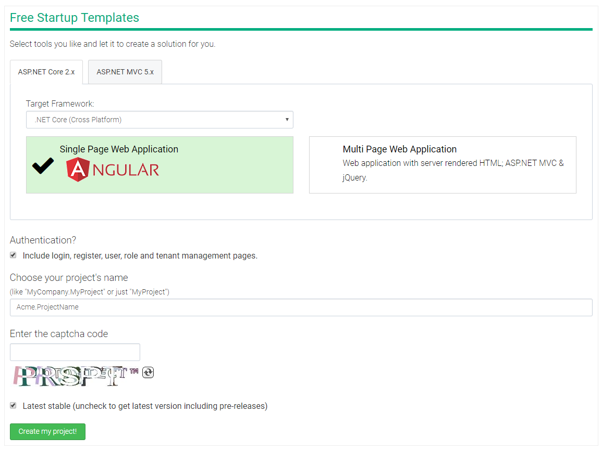
Framework: .NET Core2.0 + Single Page Web Application Angular + Include module zero
Project name: Acme.ProjectName
Before preparing project to run on Docker, let's run the project, first. I am opening the .sln file in folder ProjectName\aspnet-core.

Creating Database with Using EF Migrations
Before running project, we should create database with using EF migrations on Package Manager Console. First, I am setting Acme.ProjectName.Web.Host as start up project. (right-click Host project and select Set as Startup Project). And then, open Package Manager Console, select default project to EntityFrameworkCore, run the command below
update-database
After running this command, database will be created with name ProjectNameDb.

Running Host Project
And now, Host project is ready to run. On visual studio Ctrl+F5 . It opens swagger method index page.
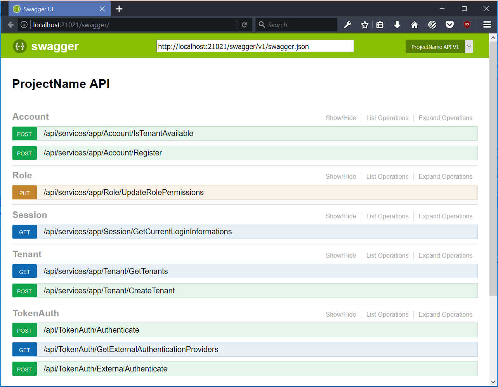
All these services are served in application layer of project and used by Angular UI.
Running Angular Project
While host is already running and we can run Angular project that uses APIs. To run Angular project, make sure you have node and npm installed on your machine.
First, run cmd on location ProjectName\angular and run the command "npm install" or just "yarn" to fetch client side packages.
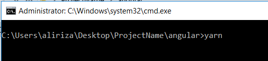
Run npm start command in the same directory to start angular project.
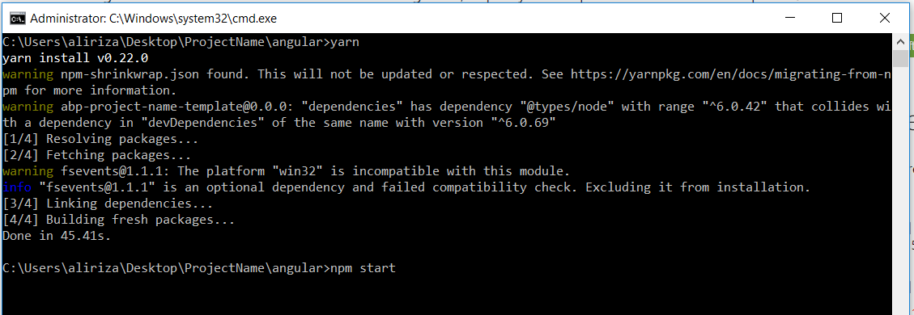
Finally you have to see the line "webpack: Compiled successfully" in the output screen.
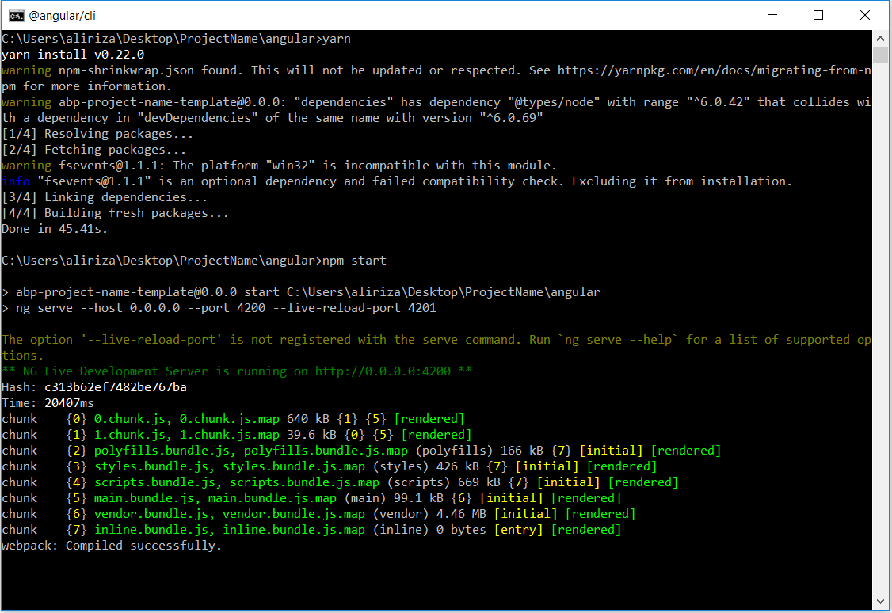
We started Angular project successfully. Open your browser and navigate to http://localhost:4200/
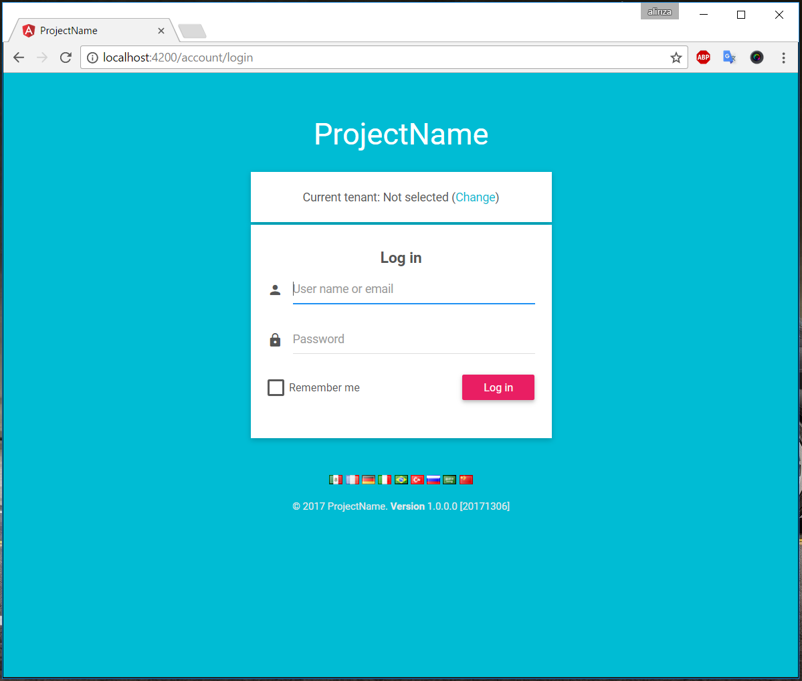
Use the credentials below to login
| Username | admin |
| Password | 123qwe |
After you login, you will see the screen below.
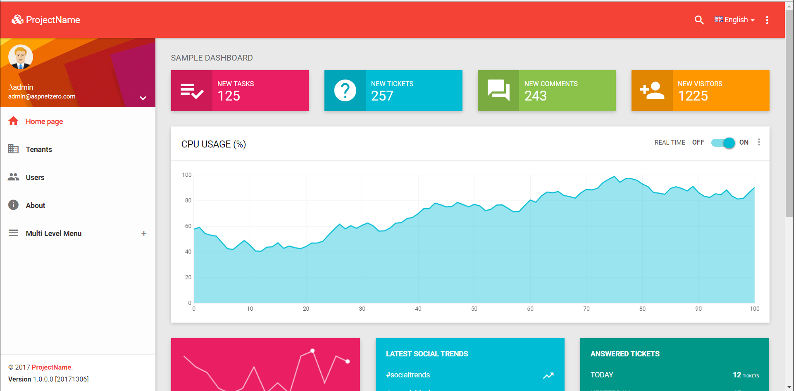
Check HERE for more details.
To summarize what we did for running Angular project:
- Run cmd on location ProjectName\angular.
- Run yarn or npm install command(I used yarn for above example).
- Run npm start command.
- Browse localhost:4200 to see angular project is running.
Everything is running properly. Ready to run on docker...
Running Project on Docker
If you have not installed Angular CLI yet, you have to install it. Run the command below to install Angular CLI.
npm install -g @angular/cli
After you ensure Angular CLI installed, let's see files and folders to configure Docker environment. There is a folder that named docker under ProjectName/aspnet-core.
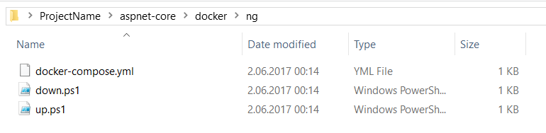
In docker/ng folder there is a docker-compose.yml file and two powershell script to run docker compose(up.ps1) and stop(down.ps1) it. And there is one more folder and a powershell script file.
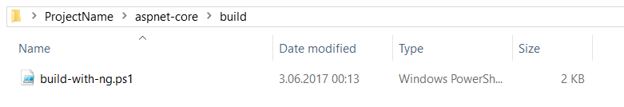
This script file to build and publish host and agular project. And also, this script copies the files that is into docker folder to build folder. First, I will run the build-with-ng.ps1 script on location ProjectName/aspnet-core/build.

After running script, when you look at the build folder, you will see the outputs folder.
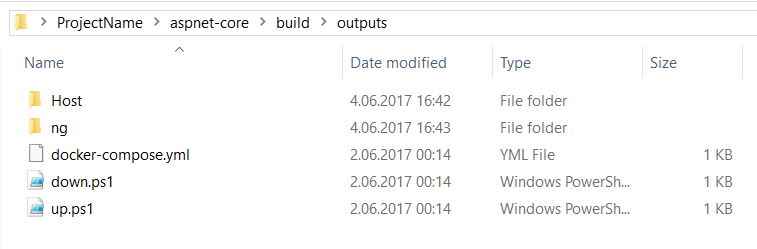
Before running up.ps1 command,
- You have to share the drives. To share it, right click Docker system tray, go to settings, navigate to shared folders and click all the drives.
- Database is hosted on the local machine not on the docker. Website hosted on docker will be connecting to your local database. And with a trusted connection string the connection will be unsuccessful. So set your sql database username & password. To achieve this modify the file "...\aspnet-core\src\Acme.ProjectName.Web.Host\appsettings.Staging.json". Update Default ConnectionStrings > "Server=10.0.75.1; Database=ProjectNameDb; User=sa; Password=<write your password>;"
Run up.ps1 script to run these two project on docker under location ProjectName/aspnet-core/build/outputs.

Angular and host projects are now running. Browse http://localhost:9901/ for Host Project and http://localhost:9902/ for Angular UI.
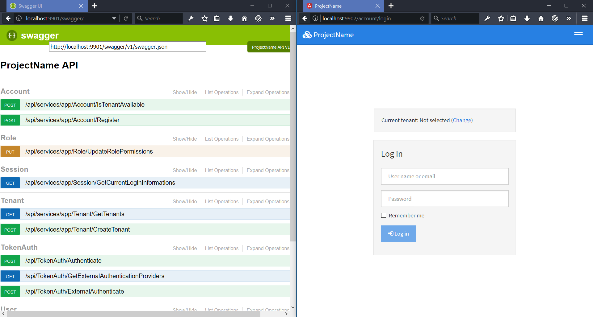
Module Zero Core Template Web Farm on Docker with Using Redis and Haproxy
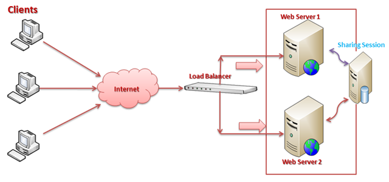
In a web farm there are more than one web servers, there is a load balancer at the front of these servers and a server to store sharing sessions/caches.
In our example, angular application will be client, haproxy will be load balancer, host app will be web servers and redis will be shared server.
Create a configuration file for haproxy named haproxy.cfg to location ProjectName\aspnet-core\docker\ng
haproxy.cfg
(Copy paste code lines makes encoding problem just download the file => Download haproxy.cfg)
global maxconn 4096 defaults mode http timeout connect 5s timeout client 50s timeout server 50s listen http-in bind *:8080 server web-1 outputs_abp_host_1:80 server web-2 outputs_abp_host_2:80 stats enable stats uri /haproxy stats refresh 1s
Important lines haproxy.cfg are server web-1 and server web-2. I repreduced host applications. This will create two host application on docker container.
Modified docker-compose.yml
(Copy paste code lines makes encoding problem just download the file => Download docker-compose.yml)
version: '2' services: abp_redis: image: redis ports: - "6379:6379" abp_host: image: abp/host environment: - ASPNETCORE_ENVIRONMENT=Staging volumes: - "./Host-Logs:/app/App_Data/Logs" abp_ng: image: abp/ng ports: - "9902:80" load_balancer: image: haproxy:1.7.1 volumes: - "./haproxy.cfg:/usr/local/etc/haproxy/haproxy.cfg" ports: - "9904:8080"
build-with-ng.ps1
Replace the below line
(Get-Content $ngConfigPath) -replace "21021", "9901" | Set-Content $ngConfigPath
with this line
(Get-Content $ngConfigPath) -replace "21021", "9904" | Set-Content $ngConfigPath
Now Angular UI will connect to haproxy. Haproxy distribute the requests to web servers.
Overwrite up.ps1 with the content below
docker rm $(docker ps -aq) docker-compose up -d abp_redis sleep 3 docker-compose up -d abp_host docker-compose up -d abp_ng sleep 2 docker-compose scale abp_host=2 sleep 2 docker-compose up -d load_balancer
To use redis cache install Abp.RedisCache library to ProjectName.Web.Core project. And update ProjectNameWebCoreModule.cs like following:
[DependsOn(...,
typeof(AbpRedisCacheModule))]
public class ProjectNameWebCoreModule : AbpModule
{
And adding redis cache configuration to PreInitialize method (ProjectNameWebCoreModule.cs)
public override void PreInitialize()
{
...
Configuration.Caching.UseRedis(options =>
{
var connectionString = _appConfiguration["Abp:RedisCache:ConnectionString"];
if (connectionString != null && connectionString != "localhost")
{
options.ConnectionString = AsyncHelper.RunSync(() => Dns.GetHostAddressesAsync(connectionString))[0].ToString();
}
})
...
Add redis configurations appsettings.staging.json.
appsettings.staging.json
{
...,
"Abp": {
"RedisCache": {
"ConnectionString": "outputs_abp_redis_1"
}
}
}
outputs_abp_redis_1 is the name of redis container and this name is defining by docker automatically. After this changing, host project will resolve the dns of machine that is deployed on. And now, when I run build-with-ng.ps1 and up.ps1 , web farm project will run. And the result:
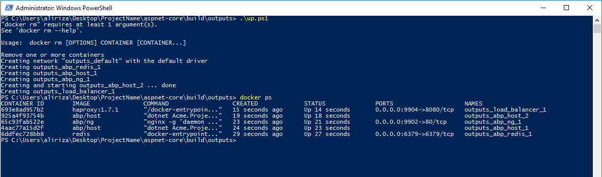
As you can see, all containers are working. When you browse http://localhost:9902 you can see Angular UI is working.
How Will I Know If Haproxy and Redis Work?
There are tools to track haproxy activity(haproxy web interface) and get redis stored data(redis cli).
Haproxy web interface
When you browse http://localhost:9904/haproxy you will see something like following.
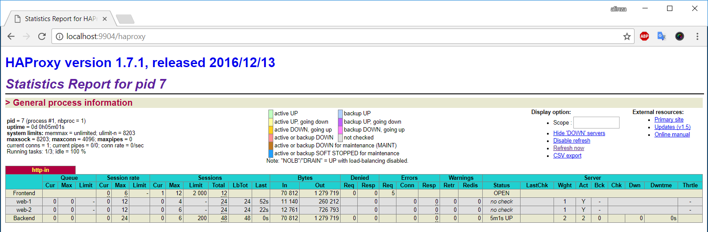
When you navigate between on angular application pages or run any api on host project (http://localhost:9904), you can see that the haproxy is routing the requests to different machines. You can track which machine is running under Session rate>Cur tab that are changing for web-1 and web-2.
Redis cli
To understand if redis is working, you can use redis-cli. run docker exec -it outputs_abp_redis_1 redis-cli command to run redis-cli interactive mode to connect redis server that is running on docker container. Then to test if redis is running, write ping command and it will return PONG if it works. Now when I write keys * command, I should get the application cache keys.
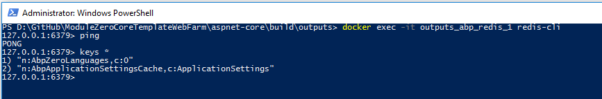
As you can see, redis is working well. Cache keys stored on redis, correctly.
Source Code
You can get the latest source code here https://github.com/aspnetboilerplate/aspnetboilerplate-samples/tree/master/ModuleZeroCoreWebFarm